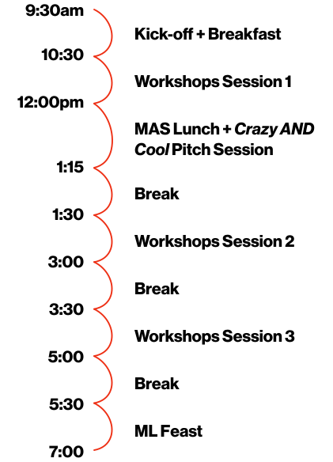

Agenda
9:30-10:30am
Kick-off + Breakfast
Hosted by FoL 22 Team, 3rd Floor Atrium
Join us as we kick off the 2022 Festival of Learning in the 3rd floor atrium! We‚Äôll also hold ‚ÄúRegistration,‚Äù aka Make Your Own Wacky Nametag at this time üñçÔ∏è
10:30-12:00pm
Workshops Session 1
How to Make (Almost) Any Sound
Hosted by Nikhil Singh, E14 3rd floor (Opera of the Future space)
Explore making different kinds of sounds: vocal, instrumental, digital/synthetic, noise, and more! We'll work through real examples from music and film, recreating these sounds together. No audio experience required. Come and make sound with us!
Beautiful Symmetry: Exploring Mathematics Through Coloring
Hosted by Alex Berke, E14 Atrium
Come relax while learning about mathematics through coloring! Together, we'll explore coloring challenges from Beautiful Symmetry: A Coloring Book About Math. We will collaboratively color patterns together, while working to maintain their symmetries. This is an interactive and collaborative drop-in installation. Note: This session runs from 10:30-11:30am
Poi
Hosted by Jack Forman, E15-341
Come learn the fabulously mesmerizing flow art of poi: the practice of spinning weights around your body that originated in the Polynesian Islands. In this session, you'll learn some basics of poi (figure 8, 3-beats, butterfly). No experience is required, but more advanced students are welcome as well, where you can learn some more difficult maneuvers! Pre-Registration Required
Papercraft
Hosted by Ada Ren-Mitchell, E14-514b
Drop by and learn to make an easy staple-bound notebook or collaborate on a 3D paper craft model!
Intro to Green Smoothies: How to Drink a Salad and Enjoy It Too!
Hosted by Rickey Ishida, E14-244
I'll bring ingredients (leafy greens, frozen fruits, water) and a blender; you bring a mug and we'll make custom smoothies together!
12:00-1:15pm
MAS Lunch + Crazy AND Cool Pitch Session
Hosted by Pattie Maes + MAS, 3rd Floor Atrium
Join us for short presentations by Media Labbers where they pitch a totally crazy but cool potential project. Presenters will ask, “Wouldn't it be awesome if we, the Lab, did project X?” In this session, the crazier, the better! Let's have fun and maybe also provide a spark for some new research. Grab your lunch and take a seat!
1:30-3:00pm
Workshops Session 2
Inside the YellowBox
Hosted by Conformable Decoders, E14 4th floor
We will bring a small group inside the Conformable Decoders cleanroom (“YellowBox”) and give a tour of our equipment and lab space. Pre-Registration Required
Foodcam 2.0 (Food Futures)
Hosted by Tobin South, Alex Berke, E14-240
In this session we will digest the literature on environmental and behavioral science and collaboratively co-design & prototype a path forward that meets (meats?) the needs of a diverse community, such as a series of experiments. If you care about fun food, changing climates, and participatory planning, then this is a session you need to attend!
Improv 101
Hosted by Matt Groh, E14-393
Learn the basics of improv. We'll have fun making stuff up and being ridiculous while playing games. Improvisational Theatre is a great form of social play and no experience is required!
Punching Defense
Hosted by Priscilla Capistrano, E14 Atrium
Join us for some basic demonstration of punches in boxing!
Lab Trivia
Hosted by Daniella DiPaola, Devora Najjar, Avery Normandin, E14-514b
Work in small groups in three rounds of trivia to answer questions on topics covering the Media Lab and more! The top-scoring teams will win a special prize :~)
Drawing++
Hosted by Future Sketches Group, E14-244
This workshop explores computational concepts such as encoding and decoding information, generative design, and algorithmic expression through the familiar lens of drawing. Participants will be led through a series of group based drawing exercises as well as computational tools to help explain important aspects of how code works and what computation feels like. Can we teach coding without code? Be prepared to roll up your sleeves and draw!
Espresso 101
Hosted by David Simon (Black Magic Coffee Co.), Atrium kitchen
You probably all know Dave as the “espresso guy” from ML Member Meetings. Well here’s your chance to pick his brain about pulling the perfect espresso: selecting beans, grinding, tamping, milk steaming techniques, and much more!
3:30-5:00pm
Workshops Session 3
Make Your Own Pasta
Hosted by Professor Mitch Resnick, E14 5th floor
Start with just flour and eggs, and end up with delicious pasta! Mix, knead, flatten, cut, boil, and eat! I started making my own pasta a few years ago, and I love sharing the experience with others.
Block Printing for Beginners
Hosted by Andrea Porras, E14-244
In this workshop we will create simple graphic works of art and repeat patterns using carving methods derived from woodcut technique. We will carve rubber blocks and other surfaces to create printable images. Knowledge of drawing is helpful but not required! Pre-Registration Required
Smoothing the Way for People with Seizures
Hosted by Professor Roz Picard, E14 3rd floor (Affective Computing space)
Information session on what to do when someone is having a seizure. Note: This session runs from 4:00-5:00pm
How to Sing (Almost) Anything
Hosted by Media Lab HR, E14-633 (Dreyfoos Auditorium)
Warm up your vocal cords and give your voice a chance to represent. Loosen up from the day of learning and enjoy some time with your friends and colleagues.
The Joy of Bicycle Maintenance
Hosted by Juliana Cherston, E14 Atrium (then outside!)
Vaguely Inspired by the classic 'Zen and the art of motorcycle maintenance', this session will give people a peek at the joy that comes from maintaining your own bike. Free giveaways at the session, and a raffle for pre-registered attendees! Pre-Registration Required
Trash Club
Hosted by Alexis Hope, E14-240
In this workshop, we'll explore how play shows up in our design process by making things together using recycled materials in a mini version of “Trash Club.” Then, we'll photograph our beautiful objects in a DIY photo studio. Let yourself loose, get inspired by the materials, and see what emerges!
5:30-7:00pm
ML Feast
Hosted by FoL 22 Team, 3rd Floor Atrium
Join us for dinner! We'll wrap up this year's Festival with a communal meal in the 3rd Floor atrium. Meet new community members and share some of what you learned throughout the day!